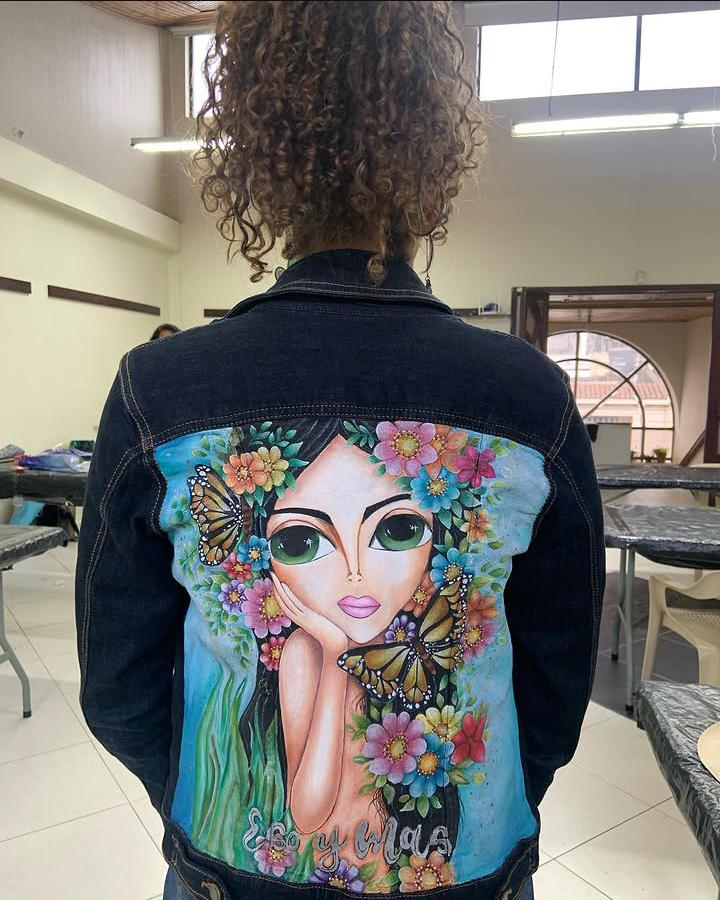
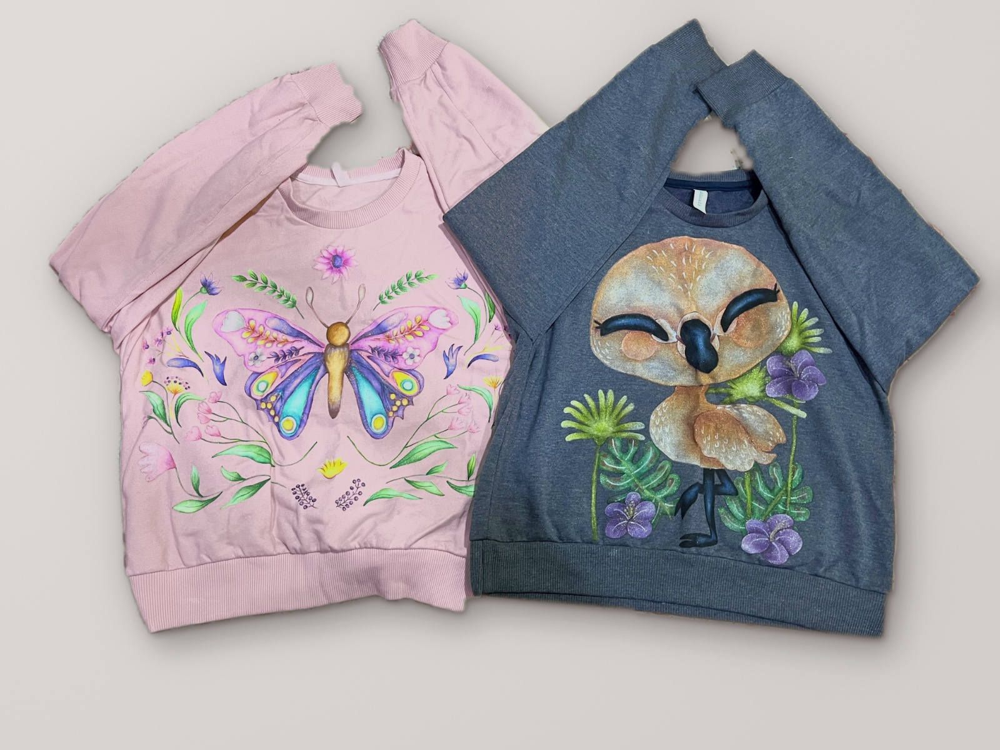
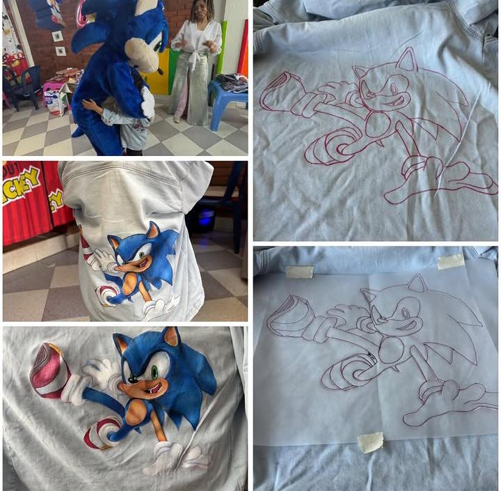

Chaqueta denim · Botánica
Jardín de bolsillo
Amapolas y hojas que crecen sobre una chaqueta recuperada. Pintura textil a pincel, flor a flor.

02 / Nuestros proyectos
Cada pieza nace de una idea, una conversación y muchas pinceladas. Así se ven algunas de nuestras transformaciones.

Chaqueta denim · Botánica
Amapolas y hojas que crecen sobre una chaqueta recuperada. Pintura textil a pincel, flor a flor.

Camiseta de algodón · Abstracto
Trazos libres en azul cobalto y pequeños soles. Una camiseta que guarda la energía de los días largos.

Pantalón denim · Trazo libre
Ramas que recorren la pierna de un vaquero. Un diseño orgánico que da una segunda vida a la prenda.
¿Tienes una prenda esperando su próxima historia? Podemos imaginarla contigo.